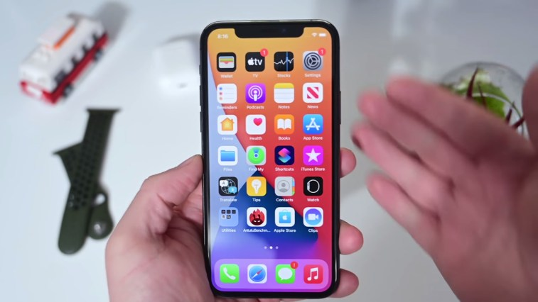

Apple lanza importantes parches de seguridad en iPhone, iPad, Mac y Watch.
Apple ha lanzado un conjunto de actualizaciones
de seguridad para iPhone, iPad, Mac y Relojes.
No hay nuevas funciones, pero estas son
actualizaciones que aún querrá instalar.
Como parte de estas correcciones de seguridad,
los iPhones y iPads se actualizarán a iOS y iPadOS 14.4.1,
los usuarios de watchOS actualizarán a 7.3.2 y macOS
Big Sur se actualizarán a 11.2.3 . Aquellos en versiones
anteriores de macOS pueden instalar la última versión
de Safari, aumentando la versión a 14.0.3.

Apple se une a Common Sense Media para seleccionar podcasts para niños.
Apple anunció esta mañana que se está asociando con
Common Sense Media para seleccionar una selección
de podcasts aptos para niños en los EE. UU. A la luz de
lo que parece ser un creciente interés en el
entretenimiento de la palabra hablada entre las familias.
Ese interés, en parte, puede haber sido motivado por
la pandemia y el deseo de los padres de reducir el tiempo
de entretenimiento de los niños frente a la pantalla.
Apple ha colaborado con Common Sense Media para
agrupar los podcasts por grupo de edad y por tema.
En el lanzamiento, la colección presenta a creadores
como Tinkercast, American Public Media, Gen-Z
Media, Pinna, Tumble, Highlights, WNYC Studios,
Rebel Girls y Nickelodeon, entre otros.